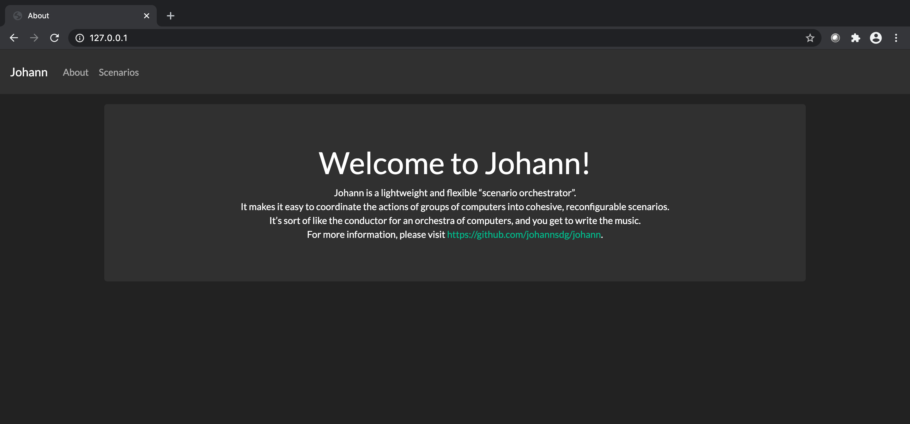
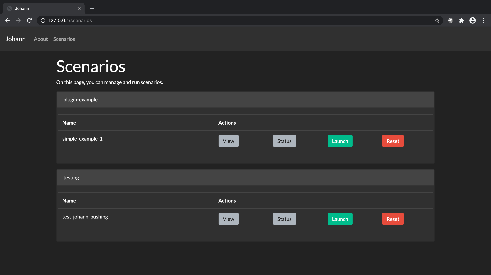
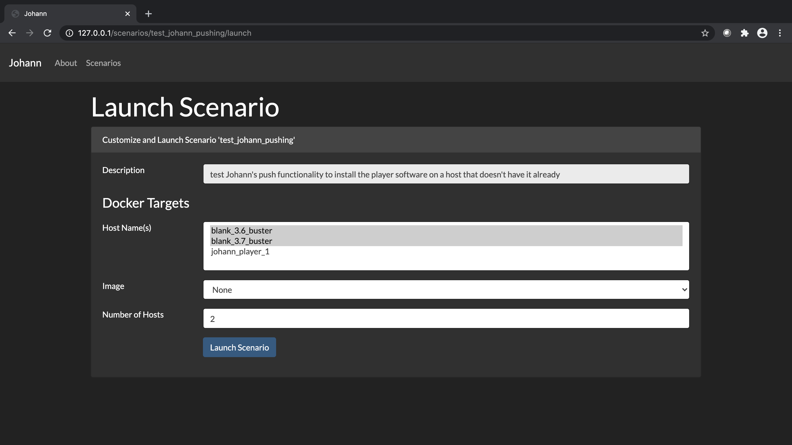
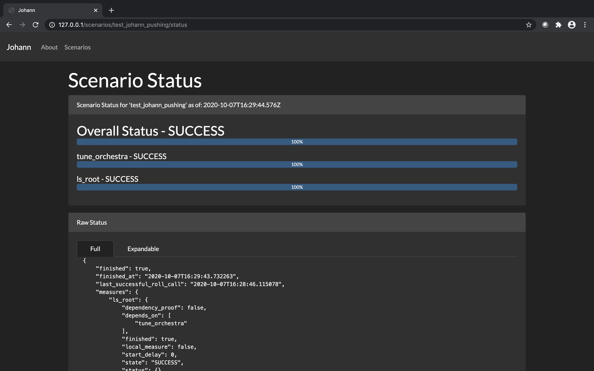
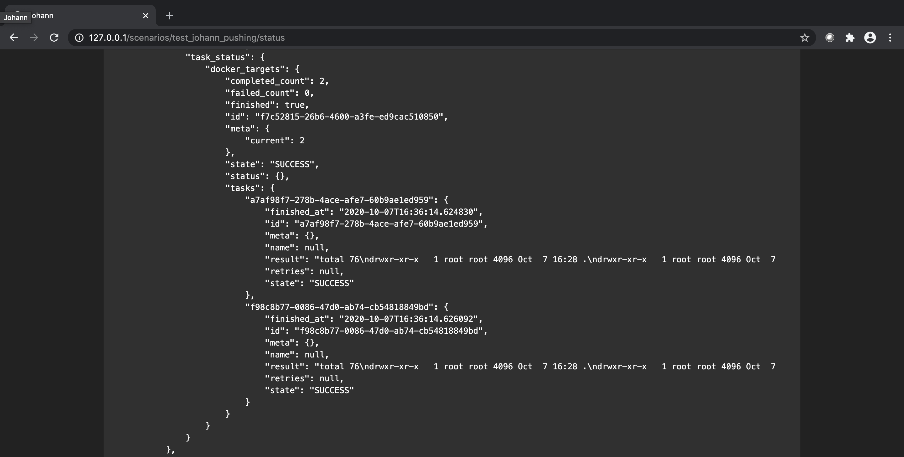

Johann
Johann is a lightweight and flexible “scenario orchestrator”. It makes it easy to coordinate the actions of groups of computers into cohesive, reconfigurable scenarios. It’s sort of like the conductor for an orchestra of computers, and you get to write the music.
Getting Started
First use git to clone Johann and change directories into the newly cloned repo.
Installing
Johann is designed to be used on Linux and run in docker containers. It has been tested on Ubuntu 18.04, and likely works on several other distributions as well.
Johann requires the following to run:
Here is an example of how to install these on Ubuntu/Debian:
# Install make
sudo apt-get update
sudo apt-get install build-essential
# Install docker via convenience script (not for production environments)
curl https://get.docker.com | sudo sh
sudo usermod -aG docker $USER
# log out and log back in
docker run hello-world
# Install docker-compose
sudo curl -L "https://github.com/docker/compose/releases/download/1.26.2/docker-compose-$(uname -s)-$(uname -m)" -o /usr/local/bin/docker-compose
sudo chmod +x /usr/local/bin/docker-compose
docker-compose --version
Running
Johann uses make to handle building and deploying its docker image. This can take a while the first time.
make dev
Usage
Johann orchestrates scenarios through reconfigurable YAML files called "Scores". Similar to musical scores, these files describe the the actions that the "Players" must take to perform their part/role in the scenario. Each Player's part in the scenario consists of "Measures" -- specific tasks and timing that Players must perform. Again similar to musical scores, the score file weaves these Measures together to orchestrate the Players in the full scenario. Each Player is currently comprised of a group of Docker container(s). In the future, these could be VMs or physical machines as well.
Lexicon
- Score -> Scenario/script describing the actions that Players must take and when
- Player -> Group of Docker container(s) that play the same part/role in the scenario
- Host -> An actual compute resource such as a Docker container, VM, or physical machine.
- Measure -> Maps a Task and its timing/configuration to Player(s) in a Score
- Task -> Specific action taken by Player(s) as part of a Measure
Example Score
The following is an example Score consisting of one Player ("docker_targets") with two
Hosts which are both Docker containers (blank_3.6_buster and blank_3.7_buster). Note
that the specific Hosts need not be specified in the Score file, and can be provided (or
changed) at runtime either via API or GUI. Both of these specific Hosts are stock Debian
containers with Python installed -- versions 3.6 and 3.7, respectively Neither of these
containers have Johann installed -- it will installed or updated ("pushed") at runtime
to match the version of Johann installed on the machine running Docker. This example
Score has just one Measure executed by one Player (2 Hosts), with a Task to run the
ls -la command in the root directory of each Host/container.
# Copyright (c) 2019-present, The Johann Authors. All Rights Reserved.
# Use of this source code is governed by a BSD-3-clause license that can
# be found in the LICENSE file. See the AUTHORS file for names of contributors.
---
name: test_johann_pushing
category: testing
description:
test Johann's push functionality to install the player software on a host that doesn't
have it already
players:
docker_targets:
name: docker_targets
hosts:
- blank_3.6_buster
- blank_3.7_buster
image: None
scale: 2
measures:
- name: ls_root
players: [docker_targets]
start_delay: 0
task: johann.tasks_main.run_shell_command
args:
- "ls -la /"
- The name
ls_rootis the arbitrary name of the Measure and is used as a key in the API to interact with the Measure. - The
playerskey specifies which Players from the list defined above should perform this particular Measure. - The Task
johann.tasks_main.run_shell_commandspecifies a specific compatible action from the Johann tasks. See Johann's task code for a partial list of compatible Tasks. - Tasks are Python functions with the decorator
@celery_app.task. - The argument
ls -lais supplied to the Task in this case to specify the command to be run as a shell command.
Running a Score
With the Johann Docker containers running via make dev, users can interact with Scores
via either the command line or the web UI.
GUI
- Open a web browser and navigate to
http://127.0.0.1/

-
Click on the Scenarios tab to view the available Scores
-
In the row containing the Score that you want to run, select one of the following options:
- View: Displays the YAML and JSON representations of the Score file
- Status: Displays the status of the current or last run depending on if a run in is progress
- Launch: Runs the Score file
- Reset: Resets the run to allow for a new run to be launched and monitored with status

- To run a Score select launch to be presented with the Launch Scenario screen.
- From this menu you can map available Hosts to the Players defined in the Score file.
- Hosts can be added either via API or a file that is run at startup.

-
Press the Launch Scenario button to launch the Score using the selected Hosts.
-
This will automatically take you to the status page for the Score you just launched where you can watch the Measures of the Score play. Note: Some Scores, including the test score, may take a few minutes to initialize before running. This is where Johann is installing or updating itself on the Hosts.

- The status page also contains the raw output of the Tasks, in this case the
ls -lacommand run on each container shown below.

Command Line
- To view available API endpoints
curl http://127.0.0.1:5000/
- To view available scores
curl http://127.0.0.1:5000/scores/
- To run a specific score
curl http://127.0.0.1:5000/affrettando/<score_name>
- To view the current status of a running score
watch 'curl http://127.0.0.1:5000/scores/<score_name>/status_short'
Roadmap
Here are some planned improvements to Johann, in no particular order: